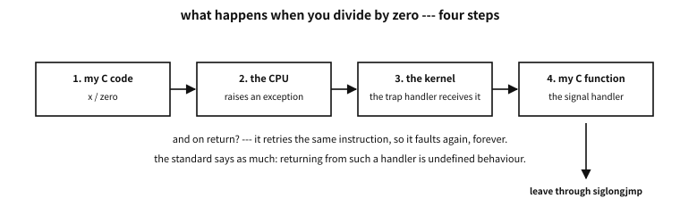
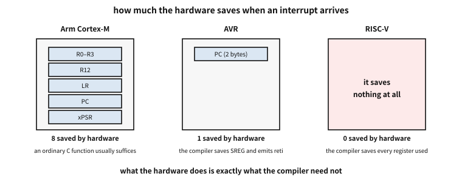
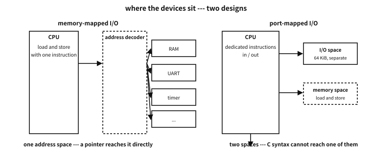

Appendix K — C without an operating system: interrupts and their machine
A word before this appendix#
Let me say it plainly: embedded work is not my field. So this appendix does not teach embedded programming. It goes only as far as understanding computers and C requires — not crossing that line is the discipline of this piece.
There is still a reason for gathering interrupts into one place.
In the days of DOS, interrupts sat far closer to the user than they do now. Pressing a key raised one; so did moving the mouse, and so did the clock advancing one tick. Even calling the operating system was an interrupt — to open a file you “threw” INT 21h. Terminate-and-stay-resident programs lived by seizing a slot in that interrupt table and slipping their own code in. Writing your own function’s address into one entry of that table was not a special skill; it was everyday work.
Some went further. DOS ran one program at a time, yet by chopping execution up with the timer interrupt and handing the pieces round to several programs — that is task switching, and multitasking. ★ Such products really existed. Quarterdeck’s DESQview (1985) was one, and when the 386 arrived, DESQview 386 paired with QEMM-386 used that chip’s virtual 8086 mode to run several DOS programs at once, each in a window. An application, not an operating system, did that.
Today that layer has sunk below the kernel and is hard to see. Even so, knowing how interrupts are put together still gives a programmer useful insight. Why volatile exists, why so little may be done inside a signal handler, why atomic operations are needed — the answers are all in this lower layer.
★ And this is an age when the tedious writing can be handed to an AI. The more that is true, the more what remains is a sense of which choice is right — and that sense comes from background like this.
So this material is not folded into the body but stands as an appendix. It is heavy for the flow of the body, and the body is complete without it. Come here only if you are curious.
★ What this appendix does not cover. Peripheral configuration (UART, SPI, I²C register tables), RTOSes, linker script syntax, chip-specific initialisation, priority numbers. That is “embedded programming”, and its place is in the chip vendor’s documentation and in specialist books, not here.
When the power comes on — a machine running without an OS#
Every program in this book so far has run on an operating system. Asked who calls main (chapter 55), the answer was “the operating system”; asked where memory comes from, the answer was “the operating system gives it”. This appendix goes to a machine where that answer does not exist.
The aim is not to become an embedded programmer. It is that why C’s strange words look the way they do is visible only where there is no operating system. volatile, sig_atomic_t, reentrancy, “living without an allocator” — all of them were born here.
A list of what the OS was doing for us#
This book has told the story of program startup in pieces, in several places. Gather them into one list and that list is exactly what we must do on a machine with no OS.
| What | On an OS | Without an OS |
|---|---|---|
calling main | the loader calls it | code starting at the reset vector calls it |
globals with initial values (.data) | the loader reads them from the file | you copy them from flash into RAM yourself |
globals starting at zero (.bss) | the kernel hands you zeroed pages | you zero them yourself |
| where the stack goes | the kernel arranges it | the linker script and the vector table decide |
| the heap | grown with brk and mmap | fixed size if present, and usually absent |
| standard output | the kernel gives you a file descriptor | you push bytes into a UART yourself |
| the program ending | after exit the kernel reaps it | it does not end — an endless loop is normal |
Table 105.1 — What the operating system did, and who does it without one
The last row of Table 105.1 is the strangest. For a program with no OS, not ending is normal. If main returns there is nowhere to go. So embedded main usually ends in for (;;).
“An uninitialised global is zero” is not free#
C promises this: an object with static storage duration is zero if no initial value is written. On an OS the promise seems to keep itself, because the kernel wipes a new page to zero as it hands it over (otherwise somebody else’s secrets would leak).
With no OS, somebody has to do that work. That somebody is the startup code. It usually looks like this.
extern unsigned __data_start, __data_end, __data_load; /* names the linker supplies */
extern unsigned __bss_start, __bss_end;
void Reset_Handler(void)
{
unsigned *src = &__data_load, *dst = &__data_start;
while (dst < &__data_end) *dst++ = *src++; /* move initial values into RAM */
for (dst = &__bss_start; dst < &__bss_end; ) *dst++ = 0; /* zero the rest */
main();
for (;;) { } /* there is nowhere to return to */
}★ Those ten lines are the distance between “C’s promise” and “the machine’s fact”. A global with an initial value has an original in flash and a copy in RAM — so the same variable holds two addresses. __data_load (the original in flash) and __data_start (its place in RAM) are the two.
Q. What grows when there are many initialised globals?
A. Both flash and RAM — an original and a copy are both needed. So in embedded work, “initialising a large array to something other than zero” costs twice over. Leaving it in .bss and filling it at run time saves flash. It is the kind of arithmetic nobody does on a desktop.
The reset vector — the first place the machine reads#
When the power comes on the CPU reads a fixed place. Which place differs by chip.
- Arm Cortex-M: it reads the first word at address 0 as the stack pointer and the second word as the address to jump to. So entry 0 of the vector table is not code but a number.
- AVR: execution begins at address 0 of flash, where there is usually a single
jmp. - RISC-V: it begins at the reset address the implementation chose. Every trap after that goes wherever
mtvecpoints.
★ What the three chips say in common is this — the starting address is a convention, not code. The machine knows only “read here”, and what to put there is decided by the linker (chapter 56). Which is why a project with no OS always has a linker script. This book does not cover its syntax — but it can now say why such a file exists.
What to take from this#
Recap
- None of C’s promises — zeroed globals, a stack, a call to
main— are kept by the language on its own. Somebody, the kernel or the startup code, actually works. - When that somebody is us, physical facts show up in the code, such as one variable having a place in flash and another in RAM.
- The next section looks at “the flow being seized” on this machine. That is an interrupt.
Interrupts — the device that seizes the flow#
A program runs one line after another. That is the picture this book has leaned on so far, and there is one place where it breaks: something outside cuts in.
This section looks at that mechanism. And as you will soon see, you have used it already — if you have ever seen a SIGSEGV.
Three words, told apart first#
Lump everything under “interrupt” and the rules that follow look arbitrary. There are three kinds.
| Kind | Raised by | When | Example |
|---|---|---|---|
| interrupt | a device outside | asynchronous — at any instruction | timer, keyboard, network |
| exception | the instruction being executed | synchronous — right there | divide by zero, touching an absent page |
| trap | an instruction, deliberately | synchronous and intended | system call, breakpoint |
Table 105.2 — Interrupt, exception, trap — the axes that separate them
★ Why the difference actually matters: the asynchronous kind arrives at a moment unrelated to my code, while the synchronous kind is the result of what I just did. So the first demands that the program be sound whenever it arrives, and the second raises the problem that there is nowhere to return to.
RISC-V carved this distinction into the hardware. It calls all three traps, reserves “interrupt” for the asynchronous ones, and in vectored mode gathers the synchronous exceptions at one address while scattering the interrupts by cause.
You have met this before — how a hardware exception reaches a C function#
The path is open on an OS too. Divide by zero and the CPU raises an exception, the kernel receives it and turns it into a signal, and that signal calls the C function we registered.

Figure 105.1 — How a hardware exception reaches my C function, and why it cannot go back.
examples-en/apx-baremetal/trap_to_c.c
/* 하드웨어 예외가 C 함수까지 올라오는 길 --- OS 위에서 그 길을 눈으로 본다. */
#define _POSIX_C_SOURCE 200809L
#include <setjmp.h>
#include <signal.h>
#include <stdio.h>
static sigjmp_buf escape;
static volatile sig_atomic_t why = 0;
static void *where = NULL;
/* 처리기는 하드웨어가 준 것을 받는다 --- 원인 번호와 터진 명령의 주소 */
static void on_trap(int sig, siginfo_t *si, void *ctx)
{
(void)sig; (void)ctx;
why = si->si_code;
where = si->si_addr;
/* 트랩 처리기에서 그냥 돌아오는 것은 미정의 동작이다(C23 7.14.1.1 p3).
터진 명령을 다시 실행하려 들기 때문이다 --- 그래서 뛰어서 빠져나온다. */
siglongjmp(escape, 1);
}
int main(void)
{
struct sigaction sa = {0};
sa.sa_sigaction = on_trap;
sa.sa_flags = SA_SIGINFO;
sigaction(SIGFPE, &sa, NULL);
sigaction(SIGSEGV, &sa, NULL);
volatile int zero = 0, x = 1;
if (sigsetjmp(escape, 1) == 0) {
x = x / zero; /* CPU 가 예외를 일으킨다 */
puts("this line is never reached");
}
printf("integer divide: si_code=%d (FPE_INTDIV=%d), faulting instruction=%s\n",
(int)why, FPE_INTDIV, where ? "reported" : "not reported");
int *nowhere = NULL;
if (sigsetjmp(escape, 1) == 0) {
*nowhere = 1; /* 같은 길, 다른 예외 */
puts("nor is this one");
}
printf("null store : si_code=%d (SEGV_MAPERR=%d), address=%s\n",
(int)why, SEGV_MAPERR, where == NULL ? "0x0" : "non-zero");
puts("");
puts("the path was: CPU exception -> kernel trap handler -> signal -> this C function.");
puts("three of the six standard signals are hardware exceptions:");
puts(" SIGFPE (floating-point exception), SIGILL (illegal instruction),");
puts(" SIGSEGV (segmentation violation). SIGINT is literally named 'interrupt'.");
return 0;
}
Output
integer divide: si_code=1 (FPE_INTDIV=1), faulting instruction=reported
null store : si_code=1 (SEGV_MAPERR=1), address=0x0
the path was: CPU exception -> kernel trap handler -> signal -> this C function.
three of the six standard signals are hardware exceptions:
SIGFPE (floating-point exception), SIGILL (illegal instruction),
SIGSEGV (segmentation violation). SIGINT is literally named 'interrupt'.
Three things to note.
First, what the hardware supplied comes up unchanged. si_code says “it was an integer division”, and even the address of the faulting instruction arrives. The kernel did not invent it; the CPU recorded it.
Second, three of the six standard signals are hardware exceptions. SIGFPE (a floating-point exception), SIGILL (an illegal instruction), SIGSEGV (a segmentation violation). And SIGINT is named interrupt outright. So interrupts are already inside the C standard.
Third, you must not simply return. The standard nails it down — if a handler returns for SIGFPE, SIGILL or SIGSEGV, the behaviour is undefined. The reason is in the hardware. Dividing by zero is a fault on x86, so returning retries the same instruction. Which is why the demonstration leaves through siglongjmp.
Interrupts are not counted#
A common misconception. pending interrupts pile up and are handled together
Measuring answers it.
examples-en/apx-baremetal/no_queue.c
/* 인터럽트는 세지 않는다 --- 대기 비트가 하나뿐이다. */
#define _POSIX_C_SOURCE 200809L
#include <signal.h>
#include <stdio.h>
static volatile sig_atomic_t runs = 0;
static void tick(int s) { (void)s; runs++; }
int main(void)
{
signal(SIGUSR1, tick);
sigset_t all, saved;
sigfillset(&all);
sigprocmask(SIG_BLOCK, &all, &saved); /* 막아 둔다 --- 하드웨어의 '금지'에 해당 */
for (int i = 0; i < 10; i++) raise(SIGUSR1); /* 열 번 요청한다 */
printf("raised 10 times while blocked\n");
sigprocmask(SIG_SETMASK, &saved, NULL); /* 푼다 --- 밀린 것이 쏟아질까? */
printf("handler ran %d time(s) after unblocking\n", (int)runs);
puts("");
puts("a pending interrupt is a bit, not a counter: ten requests, one delivery.");
puts("hardware behaves the same way, which is why a handler must ask the device");
puts("what happened rather than assume it ran once per event.");
return 0;
}
Output
raised 10 times while blocked
handler ran 1 time(s) after unblocking
a pending interrupt is a bit, not a counter: ten requests, one delivery.
hardware behaves the same way, which is why a handler must ask the device
what happened rather than assume it ran once per event.
Ten requests, and the handler ran once. Being pending is written as one bit, not as a count. The hardware is the same — a device raising an interrupt again while one is already raised finds the bit already 1.
★ So one discipline follows for embedded code. A handler must not count how many times it was called; it must ask the device what happened. How many bytes piled up in the buffer is known to the device’s register, not to the number of calls.
Can a handler be written in C — the answer differs by chip#
Now the central question of this appendix. When an interrupt arrives the CPU stops what it was doing and jumps to the handler. But what it was doing is in the registers. Who preserves them?

Figure 105.2 — How much the hardware saves differs by chip — and that difference settles the compiler’s work.
| Arm Cortex-M | AVR | RISC-V | |
|---|---|---|---|
| saved by hardware | R0–R3, R12, LR, PC, xPSR — eight | two bytes of PC only | nothing (it only records mepc and mcause) |
| left to the compiler | nothing | save SREG and others, return with reti | every register used, return with mret |
| how the handler is written | an ordinary C function | ISR() / __attribute__((signal)) | __attribute__((interrupt("machine"))) |
| nesting by default | allowed, by priority | forbidden (the I bit is cleared) | forbidden (MIE ← 0) |
Table 105.3 — When an interrupt arrives, who saves what
★ How much the hardware saves is how much the compiler need not, and their sum settles whether a C function can serve as a handler unchanged.
Why those particular eight on Cortex-M? Because they are the registers the calling convention lets a function clobber. The compiler already emits code assuming it may destroy that list. With the hardware saving them in advance, an ordinary function becomes a handler as it stands.
AVR is the opposite. The hardware pushes only the return address. It does not even save the status register, so the compiler must emit a special prologue, and the last instruction must be reti (restoring the global interrupt enable bit as well) rather than ret.
RISC-V is more extreme still. It saves no registers. All the hardware does is “write the return address to mepc and the cause to mcause, disable interrupts, and jump to mtvec”.
★ This is the ABI story. chapter 57 covered the promises not written in the source — which register an argument travels in, how a struct is returned. An interrupt is the outermost boundary of those promises. Here the hardware keeps half of the promise and the compiler writes the other half, and the line between them is drawn in a different place on every chip.
Why so little may be done inside a handler#
The C standard defines very narrowly what a signal handler may do. Of objects with static storage duration it may touch nothing but assigning a value to a volatile sig_atomic_t, and the only standard functions it may call are abort, _Exit, quick_exit and the lock-free atomic operations. (C23 added one more — an object declared constexpr may be read. It cannot change anyway.)
Why so narrow? Half the answer is in that word “lock-free”.
examples-en/apx-baremetal/lockfree.c
/* 처리기 안에서 왜 '자물쇠 없는' 원자적 연산만 허용되는가. */
#include <stdatomic.h>
#include <stdint.h>
#include <stdio.h>
static _Atomic uint32_t small;
static _Atomic unsigned __int128 big;
int main(void)
{
printf("ATOMIC_INT_LOCK_FREE = %d (2 = always lock-free)\n", ATOMIC_INT_LOCK_FREE);
printf("ATOMIC_LLONG_LOCK_FREE = %d\n", ATOMIC_LLONG_LOCK_FREE);
printf("32-bit atomic is lock-free : %s\n",
atomic_is_lock_free(&small) ? "yes" : "no");
printf("128-bit atomic is lock-free: %s\n",
atomic_is_lock_free(&big) ? "yes" : "no");
puts("");
puts("a non-lock-free atomic takes a lock behind your back.");
puts("if the code an interrupt suspended was holding that same lock,");
puts("the handler waits for a lock only the interrupted code can release.");
puts("that is why C23 7.14.1.1 allows <stdatomic.h> in a handler only when");
puts("the atomic arguments are lock-free.");
return 0;
}
Output
ATOMIC_INT_LOCK_FREE = 2 (2 = always lock-free)
ATOMIC_LLONG_LOCK_FREE = 2
32-bit atomic is lock-free : yes
128-bit atomic is lock-free: no
a non-lock-free atomic takes a lock behind your back.
if the code an interrupt suspended was holding that same lock,
the handler waits for a lock only the interrupted code can release.
that is why C23 7.14.1.1 allows <stdatomic.h> in a handler only when
the atomic arguments are lock-free.
A 128-bit atomic operation uses a lock. And if the code holding that lock is the very code just interrupted, the handler waits for a lock only it can release. Deadlock. So the standard allows only the lock-free ones.
The other half of the answer is width. A value wider than a register turns one assignment into several instructions, and an interrupt falls between instructions. Reading a 16-bit variable on an 8-bit AVR takes two reads, and if the handler changes that variable in between you get a number half of which is new — a torn value. That is why sig_atomic_t is in the language (chapter 81).
What to take from this#
Recap
- Interrupt, exception and trap are different things, and the difference shapes the rules.
- Hardware exceptions already reach C — three of the six standard signals are exactly that.
- Whether a handler can be written in C is settled by what the hardware saves.
- The narrow rules for handlers are not arbitrary; they avoid deadlock and tearing.
Touching registers — memory-mapped I/O and volatile#
The previous section watched an interrupt seize the flow. What remains is arming that interrupt and speaking to the device. Both are done the same way — by reading and writing values at fixed addresses.
Devices have addresses#
On an OS every address was memory. Read it and you get what was last written; write and it stays. That is the picture of memory this book built in chapter 5.
On a machine with no OS that picture is only half right. Some addresses are not memory but a device.
| What you do there | If it is memory | If it is a device |
|---|---|---|
| write | the value stays | something happens — a character goes out, a pin moves |
| read | what you wrote comes back | the current state comes back — possibly different each time |
| read twice | the same value | different values — and the act of reading may change the state |
| skip the read | nothing happens | something necessary fails to happen — the interrupt is not cleared |
Table 105.4 — Touching the same address — as memory, and as a device
The last row of Table 105.4 is the frightening one. Some devices are designed so that “the interrupt request is cleared by reading the status register”. Let the compiler decide that read is dead because its value is unused, and the interrupt is raised again forever. The program spins inside the handler.
A name for it — memory-mapped I/O#
What we just saw has a name: memory-mapped I/O. It means mapping a device’s registers into the CPU’s address space. “Mapping” is the mathematical word — one address corresponds not to a cell of memory but to one register of a device.
Inside the machine it goes like this. The CPU only puts out an address; it does not know what sits at the far end. What takes that address and routes it — “this range is RAM, this range the UART, this range the timer” — is the decoding circuit beside it. So *(volatile uint8_t *)0x10000000 = 'A' is, to the CPU, merely writing one byte; that the byte appears on a screen as a character is a question of where that address is wired.
★ There is a reason this matters to this book. Because devices are handled by address, C’s pointers reach them directly. No special syntax and no new operator are needed — only a volatile.
That is not the only way, though. There are two.

Figure 105.3 — A design with one address space and a design with two.
| memory-mapped I/O | port-mapped I/O | |
|---|---|---|
| where devices live | the same address space as memory | an I/O space separate from memory |
| what touches them | ordinary load and store instructions | dedicated instructions — x86′s in and out |
| in C | a pointer reaches them | it cannot — inline assembly or a compiler extension is needed |
| where it is used | almost everywhere: Arm, RISC-V, and mostly x86 too | the old x86 devices (a 64 KiB space) |
Table 105.5 — Two designs for reaching a device
The third row of Table 105.5 is the point. There is no standard way in C to write port-mapped I/O. So code that uses it always descends into assembly or a compiler extension. That is one reason new hardware chooses the memory-mapped side today — it can be handled in an ordinary language.
There is a price. Those addresses are not memory, so everything done on the assumption that they are becomes dangerous. Hold them in the cache and the next read sees a stale value (which is why such regions are marked uncached), and if the compiler removes or defers an access the device never receives the command. The language device that prevents the latter is volatile, in the next section.
★ On translation. Korean renders this term as 기억 사상 입출력, which is accurate but uses an unfamiliar word for “mapping” that also has a far more common homophone. So this book always writes the original alongside it on first use — and it is worth knowing that practitioners more often just say “memory-mapped I/O”.
The other side — distinguishing I/O by instruction (port-mapped I/O)#
If memory-mapped I/O “tells them apart by address”, the other side tells them apart by instruction. x86 is that side. This CPU has instructions for touching devices that are separate from the ones for touching memory — in and out. And the addresses they reach are a separate 64 KiB I/O space, distinct from memory.
Why does such a thing exist? It is a circumstance of the 8-bit era. On a machine with only sixteen address lines the memory space was already tight, and giving devices part of that precious room was grudged. So the design “count devices separately” appeared; Intel used it on the 8080, and it came down through the 8086 to today’s x86 unchanged. ★ So it survives not because it is a good design but to keep compatibility.
What that means for C is the point of this section.
★ C has no syntax that reaches the I/O space. A pointer is a thing that names a memory address, and it is translated into load and store instructions. There is no way in standard C to emit in or out.
So code that handles that side always descends out of the language. On Linux with GCC it is written with inline assembly.
static inline void outb(uint16_t port, uint8_t v)
{ __asm__ volatile ("outb %0, %1" :: "a"(v), "Nd"(port)); }
static inline uint8_t inb(uint16_t port)
{ uint8_t v; __asm__ volatile ("inb %1, %0" : "=a"(v) : "Nd"(port)); return v; }Compile it and those very instructions appear — not a function call, not a memory access, but dedicated instructions.
kbd:
mov eax, -82
outb al, 100 ; 0x64 --- the keyboard controller's command port
inb 96, al ; 0x60 --- the keyboard controller's data port
retOne more thing goes with them. These instructions need privilege. An ordinary application executing them faults on the spot (SIGSEGV on Linux). Only the kernel, a driver, or a program specially granted permission may use them — nobody can be left free to fire commands at the disk controller.
In practice. a 1981 port layout is still in a 2026 machine
Opening /proc/ioports on Linux lists the I/O ports the kernel has claimed. On the machine this was written on, the names were all still there: pic1 and pic2 (the interrupt controllers), timer0 and timer1, keyboard, rtc_cmos, dma1 and dma2, fpu, serial, iTCO_wdt (the watchdog). The device layout of the 1981 IBM PC survives in a machine of 2026.
(The addresses themselves were not visible — the kernel hides them from an unprivileged user. Which is itself evidence that this is privileged ground.)
A few classic addresses are worth knowing; they appear verbatim in old code.
| Port | What | Where you meet it |
|---|---|---|
0x20, 0xA0 | the interrupt controller (PIC) | code signalling end of interrupt (EOI) |
0x40–0x43 | the timer (PIT) | DOS-era code changing the timer period |
0x60, 0x64 | the keyboard controller | what the INT 09h handler read |
0x70, 0x71 | CMOS and the real-time clock | reading the time and the setup values |
0x3F8 | the serial port (COM1) | a channel for boot logs; still used on servers |
Table 105.6 — Classic port addresses met verbatim in old code
★ So the difference between the two designs is not taste but whether the language reaches. With memory-mapped I/O a device can be handled in ordinary C; with port-mapped I/O assembly is required. That is also why Arm and RISC-V have no I/O space at all — today’s designs have settled on “everything by address”.
Which is why volatile exists#
This book introduced volatile as “the thing that stops optimisation from removing an access”. True, but half the story. The standard’s own footnote gives exactly two examples, and both belong to this appendix’s world.
So volatile is not a word invented to block optimisation but a word that tells the compiler “this address is not memory”. Blocking the optimisation is only the consequence.
The typical shape is this.
#define UART0 ((volatile uint8_t *)0x10000000u) /* this address is a device */
static void uart_putc(char c) { *UART0 = (uint8_t)c; }Without volatile the compiler may reduce several writes to the same address to the last one. For memory that is a correct optimisation. For a UART it loses characters.
Interrupts are not the only thing that changes my memory — DMA#
There is one more place volatile is needed: direct memory access (DMA). DMA is hardware that moves bytes between a device and memory without going through the CPU. Tell it “read 512 bytes from this address and send them to that device” and the work proceeds separately while the CPU does something else.
Through C’s eyes this is uncanny. The contents of an array my code never touched have changed at some point. The compiler believes that cannot happen — nobody wrote to that array, so the value just read may be kept in a register and used again. Which is why a buffer filled by DMA must be volatile.
★ And here the cache slips in as one more layer. DMA usually writes straight to memory while the CPU looks at the cache. So on some machines the cache for that region must be invalidated before reading a buffer DMA filled, and flushed before handing a buffer to DMA. volatile restrains the compiler and does nothing to the cache — the language’s device and the hardware’s device are different layers.
What volatile does not do#
A common misconception. `volatile` makes it safe for several flows to touch a thing
volatile is not a concurrency tool. It stops an access being removed; it does not make that access indivisible, nor does it settle the order other cores see. Atomic types and memory orders do that (chapter 85).| What | volatile | What is needed |
|---|---|---|
| that an access is not removed | it gives this | — |
that accesses keep their order (among volatile accesses) | it gives this | — |
| that it becomes one indivisible action | it does not | sig_atomic_t, a lock-free atomic type, or briefly disabling interrupts |
| the order other cores see | it does not | atomic operations and memory orders |
Table 105.7 — What volatile gives and what it does not
The third row of Table 105.7 is the “tearing” of the previous section. Read a volatile uint32_t on an 8-bit machine and it is read in four goes. volatile keeps those four from disappearing; it cannot make them one.
Briefly disabling interrupts — the oldest lock#
A machine with no OS has no mutex. The most basic way for a handler and the main loop to touch the same data is to disable interrupts briefly.
uint32_t snapshot;
uint8_t saved = save_and_disable_interrupts(); /* the name differs by chip */
snapshot = shared_counter; /* no handler can enter in between */
restore_interrupts(saved);★ Two things must be taken care of. First, keep the disabled window short — interrupts arriving in it are delayed, and that delay is latency. Second, save the previous state and restore it. Ending unconditionally with “enable” breaks somebody else’s contract when you were called from a place that already had them off.
Do not draw a hardware register as a bit-field#
Each bit of a register has a name, so a struct bit-field looks like an exact fit. It is a trap.
Counter-example. drawing a hardware register as a struct bit-field
struct ctrl { /* ← do not do this */
unsigned enable : 1;
unsigned mode : 3;
unsigned : 4;
};The hardware’s bit positions are fixed, while which bits this declaration touches is up to the compiler.
The reason is the one this book already gave in chapter 48. The layout of bit-fields is implementation-defined — which end they fill from, which storage unit they use, can differ between compilers and versions. The hardware’s bit positions are fixed while the language side wavers.
The way it is done in practice is shifts and masks. It looks crude, and it touches the same bits under any compiler.
#define CTRL_ENABLE (1u << 0)
#define CTRL_MODE(x) (((x) & 0x7u) << 1)
*CTRL = CTRL_ENABLE | CTRL_MODE(2);And one more — read-modify-write is not atomic. *CTRL |= BIT is a read, a computation and a write, and if a handler touches the same register in between, one of the changes is lost. Which is why devices often provide separate set and clear registers — so that one write is enough.
What to take from this#
Recap
- Some addresses are not memory but a device. The word that tells the language so is
volatile. volatilesays “do not remove”, not “make indivisible”.- The most basic mutual exclusion on a machine with no OS is briefly disabling interrupts, and its cost is latency.
- Hardware registers are handled with shifts and masks, not bit-fields.
C under constraint, and bringing it back#
The three sections above asked “what changes when there is no OS”. This one looks at how C is written in that changed place — and ★ what looks different when what was learned there is carried back up onto an OS. This last section is what makes the appendix worth its space.
One timer interrupt, all the way through#
Gather the pieces of the previous sections and they make a small program. A timer raises an interrupt once a second, the handler only raises a flag and leaves, and the work is done by the main loop.
examples-en/apx-riscv/run.sh
#!/bin/sh
# RISC-V 베어메탈 --- *진짜 기계 모형에서* 돌린다.
#
# ★ 이 예제는 x86 의 gcc 로는 빌드되지 않는다(`interrupt` 속성의 인자부터 다르다).
# 그것이 이 부록의 요점이기도 하다 --- 베어메탈 C 는 대상 기계를 고른 다음에야
# 말이 된다. 그래서 교차 컴파일러로 짓고 QEMU 의 virt 기계에서 돌린다.
# ★ 도구가 없으면 건너뛰되 *건너뛴다고 말한다.* 조용히 빠지면 독자는 이것이
# 돌아 본 적 없는 코드라는 사실을 모른다.
set -eu
cd "$(dirname "$0")"
ws=$(cd ../../.. && pwd)
rv="$ws/usr/toolchains/riscv-gcc/bin/riscv-none-elf-gcc"
qemu="$ws/usr/toolchains/qemu-riscv/bin/qemu-system-riscv64"
if [ ! -x "$rv" ] || [ ! -x "$qemu" ]; then
echo "(no RISC-V toolchain here: this example was not built or run)"
exit 0
fi
"$rv" -march=rv64imac_zicsr -mabi=lp64 -mcmodel=medany -O2 -Wall -Wextra \
-nostdlib -nostartfiles -T rv_virt.ld rv_start.S rv_timer.c -o ./rv.elf
timeout 60 "$qemu" -machine virt -bios none -nographic -kernel ./rv.elf
rm -f ./rv.elf
Output
waiting for the timer...
tick
tick
tick
three ticks; done
That is the result of really running it on an emulator (QEMU’s RISC-V virt machine). Three seconds pass, it ticks three times and switches itself off — so this appendix’s example keeps the same discipline as every other chapter, without buying hardware.
Those forty lines hold the whole story of this appendix.
- A
volatile uint8_t *touches the UART address — section three. __attribute__((interrupt("machine")))makes the compiler save registers and return withmret— section two. RISC-V saves nothing in hardware.- The handler schedules the next alarm and does
ticks++. The printing is the main loop’s job. - With nothing to do it sleeps in
wfi— waiting is free because an interrupt will wake it. mainnever ends — exactly as in the first section.
In practice. the timer was set and nothing happened
This happened the first time the example was run. The timer was set and mtvec was written, and the program simply sat there. The cause was one line — the handler function had landed on a 2-byte boundary.
The low two bits of mtvec are not address but a MODE field (0 direct, 1 vectored). On a machine with compressed instructions a C function may sit on a 2-byte boundary, and using that address as it is makes MODE 2 — a reserved value — so the trap goes somewhere else entirely. It took turning on the emulator’s log to see it: the trap was jumping to address 0 and faulting on the fetch there, forever.
★ So the handler gets aligned(4). And this accident proves this appendix’s story once more — the low bits of an address may not be address at all. Alignment is not always a question of performance; sometimes it is a question of meaning.
★ Let me restate why the handler only raises a flag. Inside a handler, time is latency. Build a string there and push it into a UART and other interrupts are held up meanwhile. So the discipline becomes “the handler records the fact; the main loop decides and works”.
How to live without an allocator#
Embedded code usually has no malloc. Not because it cannot, but because many decide not to use it. There are three reasons.
| Reason | What is wrong with it |
|---|---|
| it can fail | on a machine with tens of KiB of RAM, failure is routine rather than exceptional — and there is nowhere to go when it does |
| its timing varies | the same malloc is quick sometimes and slow at others. In code with a deadline the worst case is the design figure |
| it fragments | in a long-running program the total remains while contiguous room disappears. The moment restarting is the answer, it is not an answer |
Table 105.8 — Three reasons embedded work decides against malloc
So there are two ways: reserve everything up front (static arrays), or take one block and divide it yourself (an arena). Why this book covered arenas in chapter 94 becomes clear here — before it is a performance technique it is the discipline of deciding for yourself when each thing is released.
★ The same story holds on a desktop. Code with a deadline — an audio callback, a game’s single frame, anything interrupt-like — avoids malloc, for exactly the embedded reason: the worst-case time cannot be predicted.
Writing the width into the name#
On 8-bit and 16-bit machines a 16-bit int is normal. Then what this book said in chapter 28 — that int is at least 16 bits — suddenly becomes real.
uint32_t ms; /* if the width matters, write the width */
uint_fast8_t flags; /* "at least 8 bits, and fast on this machine" */★ And here the promotion rules bite. Multiply two 8-bit values and they are promoted to int first. On a machine where int is 16 bits, 200 * 200 is 40000 and overflows. A mistake that a 32-bit int covered up on the desktop goes off here.
Handling fractions as integers — fixed point#
Small chips often have no floating-point unit. Use float on such a machine and the compiler pulls in a software implementation where one multiplication becomes dozens of instructions. So practice takes another road — representing fractions as integers.
The idea is only “I decide where the point sits”. Choose the low 16 bits as the fraction (Q16) and 1.0 is 1 << 16 while 0.5 is 1 << 15.
typedef int32_t q16; /* high 16 bits integer, low 16 bits fraction */
#define Q16(x) ((q16)((x) * 65536.0)) /* constants harden into integers at compile time */
static q16 q16_mul(q16 a, q16 b)
{
return (q16)(((int64_t)a * b) >> 16); /* a product has two fractions; shift one off */
}★ Here every one of C’s integer rules earns its keep. Fail to widen the product to int64_t and it overflows; want rounding and you must add 1 << 15 before shifting. And right-shifting a negative value is implementation-defined even in C23 — what C23 nailed down is the integer representation (two’s complement), not the result of a shift (§6.5.8 p5). gcc and clang define it as an arithmetic shift that fills with the sign, and on this machine (-8) >> 1 really is -4, but that is the implementation having decided so, not a promise of the language. Where portability matters, write it as a division or handle the sign explicitly.
Decide against floating point and you must know the integers exactly.
How deep does the stack go#
On Linux the stack is around 8 MiB and overflowing it raises a signal. On a small chip it may be a few hundred bytes, and overflowing it quietly overwrites another variable. Hence the embedded disciplines.
- No recursion. The depth cannot be known in advance.
- No large local arrays. Move them to a static array or a pre-reserved arena.
- Compute the worst case. There are tools that walk the call graph adding up frame sizes (GCC’s
-fstack-usagewrites each function’s frame size to a file). - Make an overflow visible. Fill the stack region with a known value and later see how far it was overwritten — that measures “the deepest it ever went”.
★ These disciplines are just as useful on a desktop. Recursion of unknown depth is dangerous anywhere, and “the worst-case stack” is a design figure for any code that must be dependable.
Time and power become visible in the code#
- Sleep instead of busy-waiting.
wfihalts the core until an interrupt arrives. On a battery-powered machine, how “waiting” is implemented is the battery life. - The watchdog. Fail to say “I am alive” within the set time and the chip restarts itself. ★ This is embedded work’s honest attitude — assume it will stop one day and design the recovery. The watchdog has its own trap, though. Send the “I am alive” automatically from a timer interrupt and the watchdog stays satisfied even after the main loop has died. So the place that reports must be where the work actually advances — the evidence of life is not a heartbeat but a trace of work done.
- Measure the worst case. The design figure is the worst response, not the average. Intervals with interrupts disabled, the length of handlers, and priorities make that worst case.
Bringing it back — reading it again on an OS#
The purpose of this appendix was never to make you an embedded programmer. Having been there, the earlier chapters now read differently.
| What was learned earlier | What it meant then | What it means after the visit |
|---|---|---|
volatile | something that blocks optimisation | something that says “this address is not memory”. Blocking the optimisation is the consequence |
sig_atomic_t | a special type used with signals | the name of a physical fact: values wider than a register tear |
| the narrow rules for signal handlers | a list to memorise | two reasons — avoiding deadlock (locks) and tearing (width) |
| reentrancy | a term | a nested interrupt entering the same function twice |
| arenas (chapter 94) | fast allocation | the discipline of deciding for yourself when each thing is released |
| the calling convention (chapter 57) | where arguments travel | that hardware sometimes keeps half of it for you |
the width of int | a portability clause | the actual place where promotion creates an overflow |
Table 105.9 — Earlier chapters, read again after the visit
One last thing. An interrupt is the oldest form of concurrency. Long before threads, a program already had to solve “other code touches my data at a moment I do not know”. Today’s atomic operations and memory orders are that same problem grown out to many cores.
Recap
Notes
- A
volatiledeclaration may be used to describe an object corresponding to a memory-mapped input/output port or an object accessed by an asynchronously interrupting function. Actions on objects so declared shall not be “optimized out” by an implementation or reordered.
— C23 §6.7.4, footnote ↩